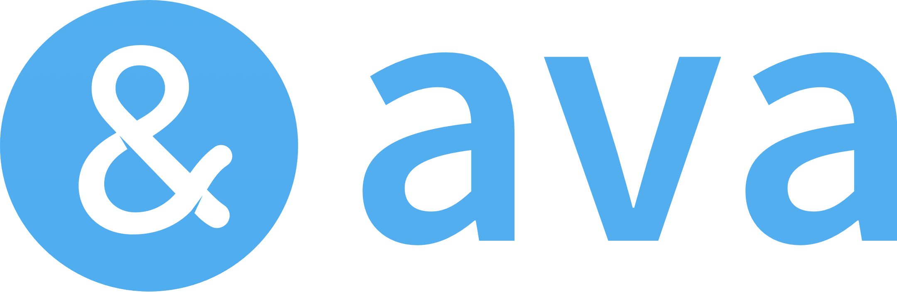

Inicio > Accesibilidad
Herramientas de IA para Accesibilidad

Ava
Plataforma de accesibilidad para personas sordas y con problemas de audición.

Be My Eyes
Aplicación que conecta a personas ciegas con voluntarios videntes.

CoWriter
Herramienta de escritura asistida por IA para estudiantes con dificultades.


Goblin Tools
Conjunto de herramientas de IA para mejorar la accesibilidad digital.

Mathpix
Herramienta de IA para convertir imágenes y PDF en LaTeX, haciendo las matemáticas más accesibles.

Microsoft Teams for schools
Plataforma colaborativa con características de accesibilidad para educación.

Zoc
Plataforma de IA para mejorar la accesibilidad y el aprendizaje personalizado.